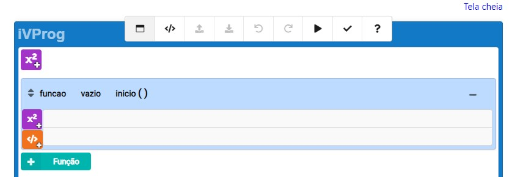
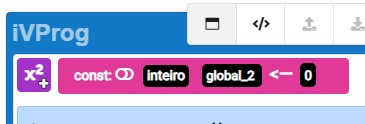
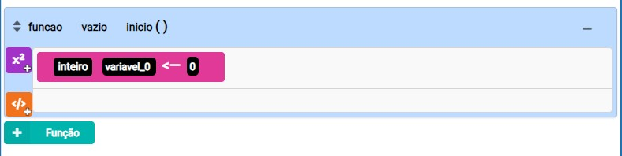
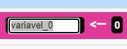
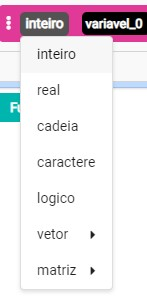

Introdução ao iVProg
O iVProgH é um sistema educacional livre, implementado em HTML5 (HTML+CSS+JavaScript), destinado ao ensino e à aprendizagem de algoritmos e programação. Foi projetado a partir de um modelo visual para programação e pode ser utilizado desde o segundo ciclo do Ensino Fundamental.
- Possibilita o uso de exercícios com avaliação automática.
- Integração com o ambiente Moodle para facilitar o ensino.
Para experimentar um exercício com avaliação automática, clique aqui.
Para examinar o manual do iVProgH, clique aqui.
Como Iniciar
Aqui estão algumas dicas para começar a programar no iVProg:
- Escolha um projeto simples para começar.
- Use a documentação online para obter ajuda.
Lembre-se, a prática leva à perfeição. Continue programando e você melhorará suas habilidades ao longo do tempo.
Interface do iVProg
A imagem abaixo mostra a interface inicial do ivprog
A interface conta com uma seção global para declarar variáveis globais logo no começo do programa.
E logo abaixo no bloco azul claro, uma função já iniciada
Em caso de necessidade é possível adicionar mais de uma função ao projeto no botão verde claro:
Compreendendo Variáveis
Em qualquer ambiente de programação, as variáveis desempenham um papel fundamental ao armazenar valores que serão usados no código. Imagine escrever um programa no qual você não sabe quais valores serão inseridos. Nesse caso, você precisa reservar um espaço especial, representado por uma variável, para armazenar esses valores.
1.1 Criando Variáveis no iVProgH
No iVProgH, a criação de uma nova variável é simples. Basta utilizar o botão "Criar Variável". No início, você não terá nenhuma variável disponível. Ao clicar pela primeira vez, uma nova variável será criada.
É possível alterar o nome da variável:
É possível também alterar o tipo da varíavel
É possível criar um vetor/lista para o armazenamento de mais de um dado em uma só variável
Comandos
Os comandos são ações que o programa pode executar. Eles são executados em ordem, um após o outro, até que o programa termine.
1.1 Comando de "Atribuição"
O comando de atribuição é usado para atribuir um valor a uma variável. O valor pode ser um número, uma string ou uma variável.
1.2 Comando de "Entrada/Leitura de dados"
O comando de entrada é usado para ler um valor do teclado e atribuí-lo a uma variável.
1.3 Comando de "Saída/Escrita de dados"
O comando de saída é usado para exibir um valor na tela.
1.5 Comando de "Chamada de função"
O comando de chamada de função é usado para executar uma função.
1.5 Comando de Condição - "Se verdadeiro então"
O comando de condição é usado para executar um bloco de código apenas se uma condição for verdadeira.
1.6 Comandos de Repetição
O comando de repetição é usado para executar um bloco de código várias vezes.
1.6.1 Repita N vezes
O comando de repetição "Repita N vezes" é usado para executar um bloco de código um número específico de vezes.
1.6.2 Enquanto verdadeiro
O comando de repetição "Enquanto verdadeiro" é usado para executar um bloco de código enquanto uma condição for verdadeira.
1.6.3 Repita até que verdadeiro
O comando de repetição "Repita até que verdadeiro" é usado para executar um bloco de código até que uma condição seja verdadeira.
1.7 Comando de comentário
O comando de comentário é usado para adicionar comentários ao código. Os comentários são ignorados pelo compilador e não afetam o programa.